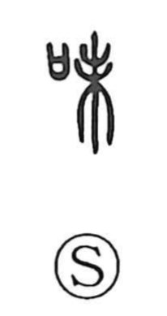

味

Kun: aji, ajiwai, ajiwau | On: mi, bi
taste ・ flavor ・ savor
Explanation
味 is a phono-semantic character: 口, the mouth, signals tasting, while 未 supplies the sound (mi). 未 originally depicts a tree with branches growing luxuriantly; the tender tips where new leaves emerge were thought to have a particularly notable flavor. From this image, 味 came to express savor or rich taste. The Shuowen defines it as “滋味,” a deep savor, and the character is used broadly for ‘taste’ and ‘to taste.’